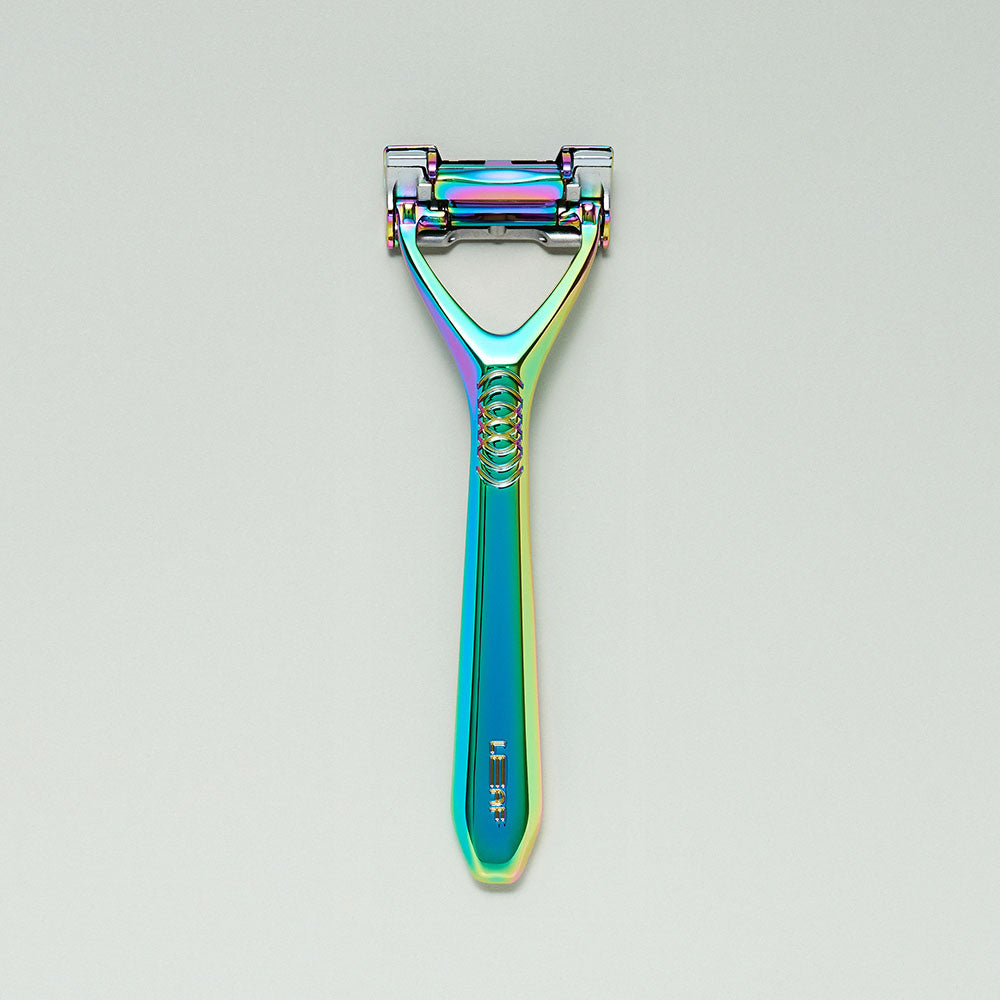
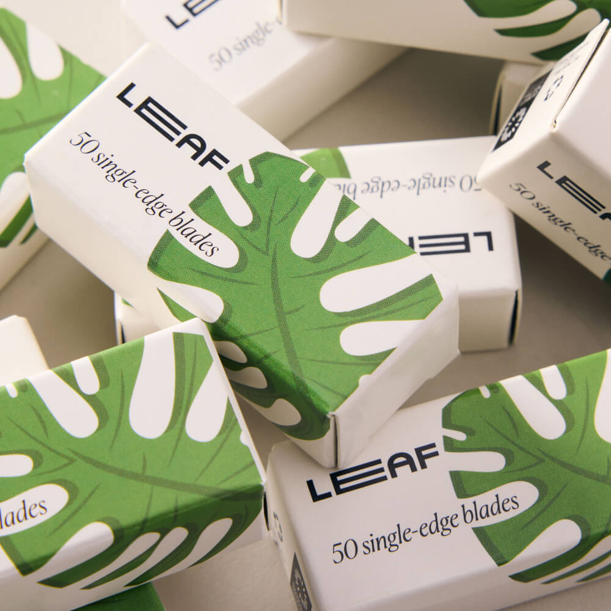
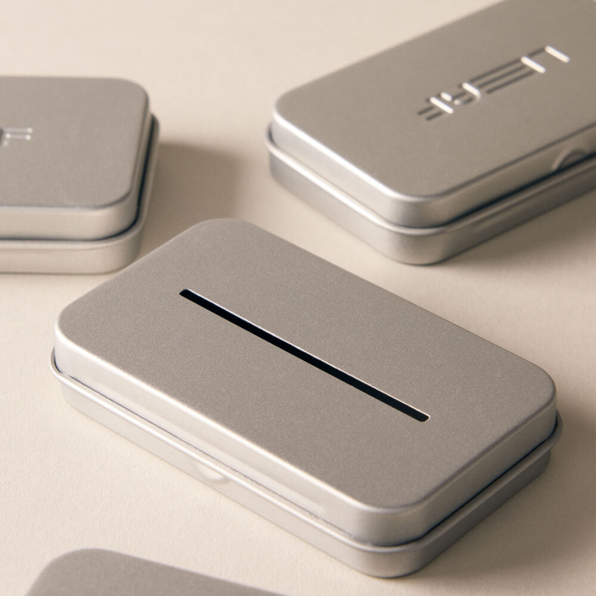

Leaf Two Razor
A metal pivoting razor with two blade positions.
View official product ↗TOOLS • REFILLS • CARE
Explore a razor, blade refills and a recycling accessory. Keep the next refill decision based on your own use.

Three real references. Confirm options, prices and availability at the official store.
A metal pivoting razor with two blade positions.
View official product ↗
Single-edge steel refill blades; check the official compatibility guidance.
View official product ↗
A dedicated tin for collecting used blades and guards before appropriate recycling.
View official product ↗YOUR LOCAL SHORTLIST
Your selection stays in this browser. It does not reserve products or submit orders.
Leaf publishes separate razor, accessory and shave-care categories.
Blade Packs and Dermaplaner Refills are different product listings.
The official website provides an instructions-and-care section and a recycling information section.